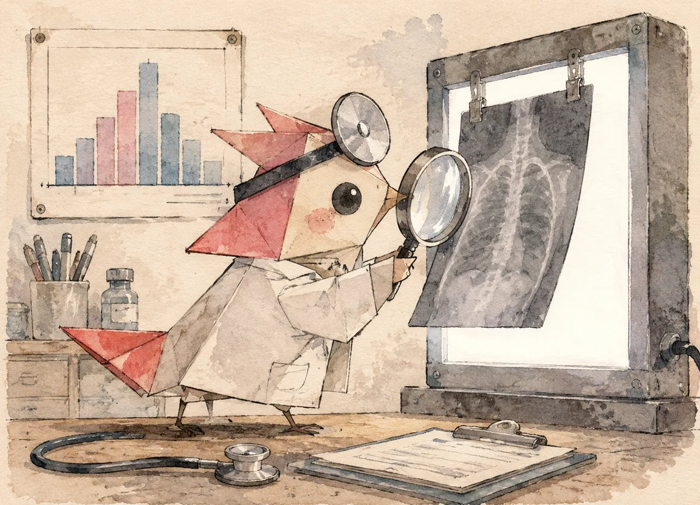
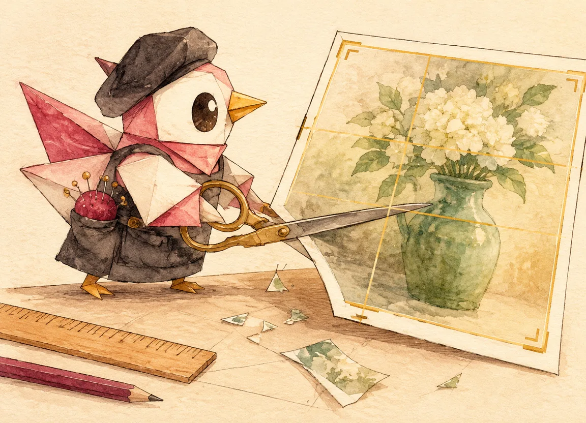
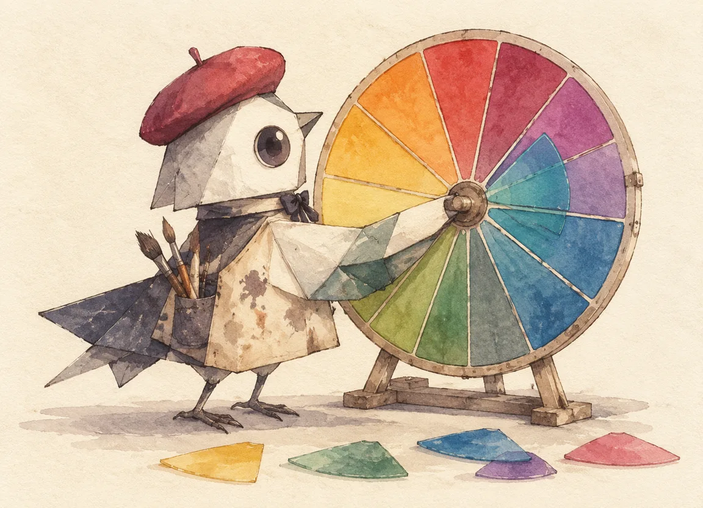
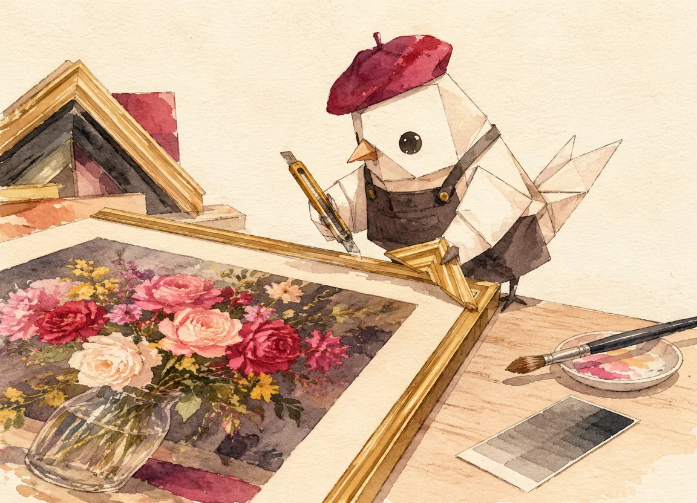

00:00
修之前先诊断
没问诊就开药方，是修图最常见的事故。诊断三连：问题是什么？想要什么感觉？代价是什么？
拿到一张直出照片，手痒想先拉个饱和度——停。先做三件不花钱的事：看直方图、说意图、想代价。

直方图会说话
直方图是照片的体检报告：横轴是亮度 0（纯黑）到 255（纯白），纵轴是该亮度上压着多少像素。它回答不了「好不好看」，但能客观回答三个问题——曝没曝对、反差够不够、有没有细节被切掉。看本文的病人甲（阴天静物底片）：
- 波形整体堆在左半边，右侧大片空白——欠曝倾向，画面发闷的根源；
- 波形两端没顶到边——好消息：没有死黑死白，细节都在，有救；
- 中间调挤成一座窄塔——对比度不足，这就是「发灰」的直方图长相。
LUMINANCE HISTOGRAM · 亮度直方图
说意图，再想代价
直方图回答「技术上怎么了」，意图回答「情绪上要去哪」。同一张静物：想要清晨通透感，往高调走、色温偏冷一点；想要黄昏胶片感，往低调走、阴影染暖。两条路都成立——但得先选一条，因为后面的每一步都会跟着它走。代价意识也在这时建立：提亮阴影会放大噪点，压高光会损失层次，拉饱和会让肤色失真。修图的每个决定都有账单，只是账单晚一点到。
诊断完了，第一刀不是调色——是裁剪。下一章：二次构图。
00:01
二次构图：先裁后修
裁剪是修图的第一刀：它决定哪些像素值得被精心处理——先裁再调色，工时才不浪费
诊断完别急着拉曲线。看一遍构图：有没有该裁掉的？拍摄现场的边角经常混进杂物、主体占比偏小、视线方向留白不对。裁剪是最便宜的「重拍」——不要钱，只花几秒钟，收益却贯穿后面每一步：裁完之后的直方图才是有效像素的直方图，局部调整的范围也以裁后画面为准。

三个经典的裁剪判断
- 视线方向留白：人看向哪、花枝伸向哪，就把空间留在那侧。贴边会有「要出画」的压迫感。
- 地平线要平：除了刻意倾斜表达不安，横平竖直是底线的秩序感。
- 主体占比：特写让细节说话，环境照让场景说话——犹豫时按三分法把主体放在交点上，一般不会错。
裁剪方案
裁剪的两个副作用
其一，裁剪等于放大：画面变小、单个像素变大，画质在消耗。裁掉超过三成，就该掂量一下锐化和噪点的代价。其二，裁剪改变直方图的形状：裁掉一大片亮天空，直方图的右侧山峰会整体塌下去——所以「先裁后修」不光是工时问题，是让后面的每个判断都建立在最终画面上。
00:02
影调：色阶与曲线
颜色再漂亮，影调塌了都白搭。两件终极工具：色阶管「两端与中间」，曲线管「每一段的形状」——都是一张 256 格的查找表
影调工具的祖师爷是「色阶（Levels）」：三个滑块——黑场（输入黑点）、伽马（中间调）、白场（输入白点）。它的全部数学一行就写完：
v' = 255 × ( (clamp(v, black, white) − black) / (white − black) ) ^ (1 / gamma)
黑场右移 = 把「接近黑」的像素直接钉成纯黑（去灰雾）；白场左移 = 钉白；伽马只弯中间、不碰两端。而「曲线」是色阶的自由态：不是三个滑块，是任意多个控制点——你画什么形状，像素就变成什么形状。两者本质相同：都是一张 256 格的查找表（LUT），每个亮度查一下「你该变成几」。
曲线：自由态的影调
色阶只有三个自由度，曲线有无限个。它是修图师的钢琴：横轴输入亮度，纵轴输出亮度，画一条单调上升的线。中点往上提=提中间调；底部抬起=「胶片感」的哑光黑；S 形=加对比。点「通道」切到 R/G/B，还能单独给某个通道画曲线——这就是风格调色的底层机关（下一章的 HSL 是它的语义化封装）。
影调骨架立住、曲线定了性格，颜色还是「对但无聊」的——下一章进色彩。
00:03
色彩：白平衡与 HSL
先让颜色「归位」（白平衡），再让颜色「站队」（HSL）——顺序反了就是全图乱染
色彩修正分两层，顺序铁律：白平衡先归位，HSL 再动个体。白平衡是「全图统一偏移」，先校正光源色偏；HSL 是「按颜色分别处理」，只动红、只压绿。反着来——先 HSL 后白平衡——等于先给每个人化妆再统一改灯光，妆全白化。

白平衡：找到那块「中性灰」
照片里的病人乙（咖啡馆底片）是典型的钨丝灯偏色：整张泛橙黄。校白平衡的本质是给全图乘一组反向系数：暖了就加蓝减红。判断标准最朴素的办法是找画面里「本该是灰白的东西」——白墙、白杯子、餐巾纸——它们归位了，全图就归位了。色温滑杆往左（偏蓝）走，橙色退潮。
HSL：只动该动的颜色
HSL 把颜色拆成色相（H）、饱和度（S）、明度（L）三个旋钮，每个颜色通道各有一套。它的价值在于精准：全局拉饱和，肤色跟着遭殃；HSL 里单独压「绿色饱和度」，叶子退后、花枝凸出，画面立刻有了主次。病人甲的「绿色发闷」正治这个：绿色明度略降 + 饱和微升，叶子的绿从「蒙了一层灰」变成「深绿」。
一个反直觉的技巧
颜色「闷」的时候，第一反应往往是拉饱和度。先试试降明度：把闷绿的颜色明度压下来，饱和度几乎不用动，绿色自己就「沉」下去了——因为发闷的常见原因不是饱和不够，而是颜色里混了太多白（明度偏高）。降明度治闷，升饱和治淡，两副药别搞混。
00:04
局部：光落在哪
全局调完之后，好照片和普通照片的差距往往只剩一个动作——把光引到主角身上
人眼看东西从来不是均匀的：亮的地方先看，清晰的地方多看。全局调整对所有像素一视同仁，局部调整才决定「视线往哪走」。这一章只有两个动作：压暗四周（vignette），提亮主体（radial lift）——数字版的减光棒和加光棒。
Vignette：给画面一个焦点
四周压暗 10–15%，视线就会自然被推向中心。它模拟的是镜头光学本身——真实镜头边缘进光就少——所以做得克制时，观众只会觉得「这张照片挺聚焦」，看不出被处理过。做狠了（30%+）就成了Instagram 滤镜，一眼假。
提亮主体：光的方向感
在主体位置放一个柔和的径向提亮，等效于「当时有一束光刚好打在花瓶上」。配合四周压暗，画面就有了光的叙事：哪里是舞台，哪里是观众席。
到这里，技术层面的问题都解决了：影调立着、颜色归位、光有方向。但成片和习作的差距，还差最后一层——风格。
00:05
风格：色调分离与一致性
影调和色彩都「正确」了，成片还差一层「感觉」——它来自一个略显玄但完全可操作的机制：色调分离
把一张「技术上全对」的照片和一张让你记住的照片对比，差别通常在高光和阴影的颜色倾向上。日落照片高光染金、阴影偏青；日系照片高光偏青、阴影偏品红——这个「各染各的」机制叫色调分离（split toning），是风格化最大的单一杠杆。
它为什么有效
人眼对「整体色彩倾向」比对「单个颜色准不准」敏感得多。高光加一点金、阴影加一点青，画面就有了冷暖对话——即使每个颜色都没失真，情绪已经变了。这就是电影调色（color grading）和照片校色（color correction）的分水岭：校色求真，调色求感。
teal & orange 不是万能钥匙
青橙组合之所以统治电影海报，是因为肤色在橙区、青是橙的补色——冲突感强。但它只是众多合法答案之一，而且风格要服务内容：清晨静物配青橙就莫名其妙，配「高光暖黄 + 阴影微青」的清新组合才对味。选风格的三个依据：内容的时段（清晨/黄昏/夜）、情绪（安静/冲突/温暖）、以及——你这一组照片要像一家人。
| 内容 | 高光染 | 阴影染 | 效果 |
|---|---|---|---|
| 清晨静物 · 通透 | 暖黄 | 微青 | 清新、空气感 |
| 黄昏街头 · 温暖 | 橙金 | 深青 | 经典 teal & orange |
| 夜雨 · 孤独 | 冷白 | 靛蓝 | 疏离感 |
| 胶片人像 · 怀旧 | 奶油色 | 青灰 | 褪色的温柔 |
组片一致性：风格的复利
单张风格叫「调色」，一组照片共用同一套色调分离参数才叫「风格」。社交媒体九宫格的整齐感、摄影集的统一气质，都来自这里。把本章的处方存成预设，下一次拍摄回来直接套——风格的复利就这么攒起来的。
00:06
克制：知道什么时候停手
所有技术都讲完了，最后一章讲最难的那个滑杆——「停」
修图工具箱里没有「撤销冲动」这个按钮。饱和度 +15 的那一下永远很诱人，因为屏幕上的变化立刻可见——但可见的变化量和可感知的品质不是一回事。修图的最高评价是「修过但看不出来」：观众只觉得照片好看，说不出哪里被动过。
三条停手判据
- 放大到 100% 还站得住：噪点、锐化光晕、过渡断层，全屏好看放大穿帮的，都是修过头。
- 三天后再看：刚修完时你在兴奋里；隔几天再看，过度的部分会自己跳出来。
- 问「这张照片需要它吗」：每个滑杆都要能说出服务对象——说不出理由的效果，删。

输出：最后一道工序
导出不是「另存为」。网图 sRGB、长边 2048–2560 足够；锐化放最后一步、按输出尺寸锐（sharpen for size）；JPEG 质量 85 是甜点。修图的工作流到「按尺寸锐化导出」才算闭环——半途的照片等于没修完。
回头看这七步：诊断、裁剪、影调、色彩、局部、风格、克制——没有一步叫「加滤镜」。修图的思路，就是把「让它好看点」拆成七个知道为什么的决定，然后按顺序做对。
结语：修图是第二次取景
按下快门只完成了一半取景——剩下的那一半在暗房里完成：裁掉什么、留住什么、让光落在哪、让颜色说什么。这篇没有教任何「一键出大片」，因为那种按钮不存在；存在的是七个知道为什么的决定，和一双知道什么时候停的手。
直方图告诉你技术上怎么了，你告诉自己情绪上要去哪，代价预算提前想好。没诊断的修图，是随机漫步。
裁剪先于调色，白平衡先于 HSL，全局先于局部，风格先于输出。顺序错了，每一步都在给后面的步骤挖坑。
每个滑杆都问一句「这张照片需要它吗」。修图的最高评价不是「效果拉满」，是修过但看不出来。